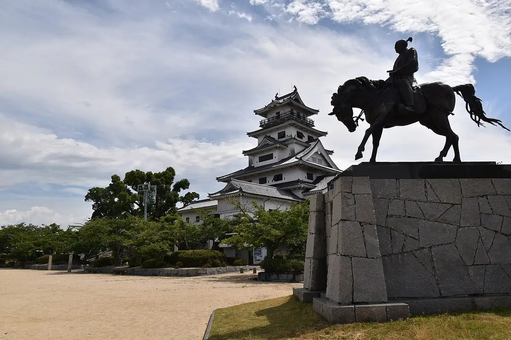
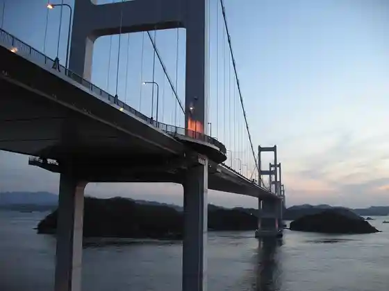
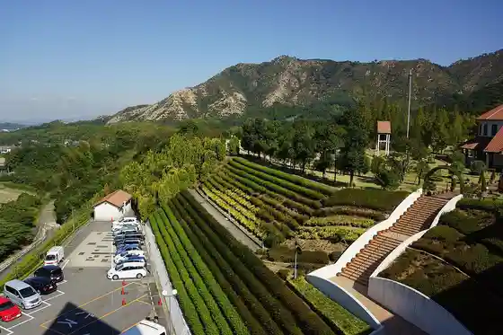
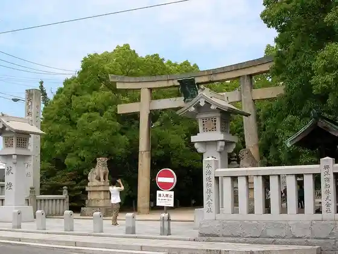
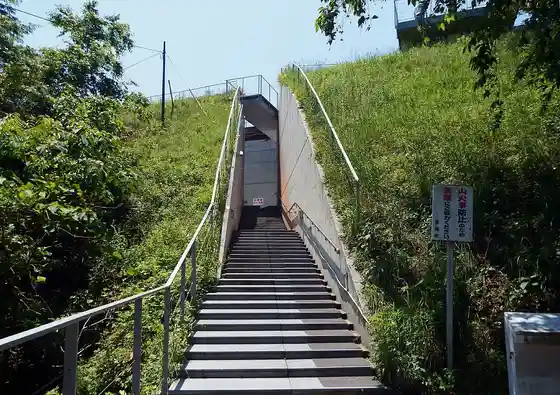

Imabari
Imabari · Ehime
Imabari
Highlighted on the Ehime map.

Stay
Imabari Kokusai Hotel
Imabari Aban Hotel
Tabist Kadoya Besso
Yu no Ura Onsen Shio no Maru Setochi no Suigun Roman Wotadoru Yado
Hotel Kuraunhiruzu Imabari Ekimae (BBH Hotel Gurupu)
Hotel Kikusui Imabari (Hotel Kikusui Imabari)
Hotel Shichi Fuku
Imabari Plaza Hotel
Don Kawa Onsen Mika to (Mikado)
COZY HOTEL NUKUI shimanami
Yonenaga Ryokan
Oshio So
Bijinesu Ryokan Warai Fuku
Kadota Ryokan
Guest House Orenji no Kaze ^
Ketsu no Ya MITSUBACHI
Sauna & Supa Hotel Kisuke no Yado Imabari Ekimae Mise
GLAMPROOK Shimanami (Guranruku)
Tennen Onsen Kaido Baths Supa Hotel Imabari
JR Kurementoin Imabari
Imabari Taisei Hotel
Rearea Resort Vira Kamoike / Minpaku
Shimanami Puraimu Hotel Imabari
Tennen Onsen (Tabibito Baths) Hotel Rutoin Imabari
Imabari Suteshon Hotel
Umi Yado Sennen Matsu
HOTEL STAY+
Dining
Gyosai Kun Gin Aki Yama
Sumibi Yakitori Torikko Imabari Mise
Yakiniku Korai
Yakiniku Daiei
Seiniku Tonya Chokuei Yakiniku Mise Yakiniku no Kura Imabari Mise
BISTRO Paysan
Aburiya Abe Shoten
Rai Shima Kaisen Sake Bar ANCHOR
Yakitori Yamadori
Hachi Kachi Tei Oriento Imabari Mise
Oden Ya Fumi
Sennen no Utage Imabari Higashiguchi Ekimae Mise
Morimi Hikari Su Sono
ICHIE
Maru Ki Matsu Main Shop
Oberuju
Onsen
Imabari Kokusai Hotel Imabari Onsen
Tabist Kadoya Besso Bihada Onsen
Yu no Ura Onsen Shio no Maru Setochi no Suigun Roman Wotadoru Yado Public Bath
Hotel Kuraunhiruzu Imabari Ekimae (BBH Hotel Gurupu) Public Bath
Hotel Kikusui Imabari (Hotel Kikusui Imabari) Kashikiri Furo
Hotel Shichi Fuku Viewpoint Furo
Don Kawa Onsen Mika to (Mikado) Public Bath
COZY HOTEL NUKUI shimanami Public Bath
Yonenaga Ryokan Public Bath
Oshio So Public Bath
Bijinesu Ryokan Warai Fuku Public Bath
Don Kawa Onsen Kairaku So Onsen
Kadota Ryokan Don Kawa Onsen
Ketsu no Ya MITSUBACHI Public Bath
Sauna & Supa Hotel Kisuke no Yado Imabari Ekimae Mise Public Bath
GLAMPROOK Shimanami (Guranruku) Public Bath
Tennen Onsen Kaido Baths Supa Hotel Imabari Imabari no Meito
JR Kurementoin Imabari Kisuke Baths
Shimanami Puraimu Hotel Imabari Public Bath
Tennen Onsen (Tabibito Baths) Hotel Rutoin Imabari Public Bath
Imabari Suteshon Hotel Jinko Onsen
Umi Yado Sennen Matsu Manten Baths
Sights
Imabari Shiro
Rai Shima Kaikyo Bridge

Taoru Art Museum ICHIHIRO

Oyamatsumi Shrine

Kame Ro Yama
